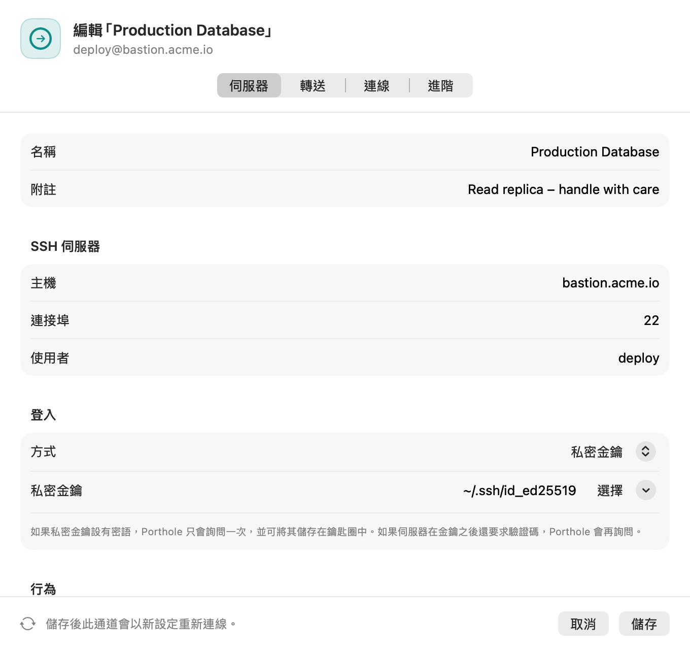
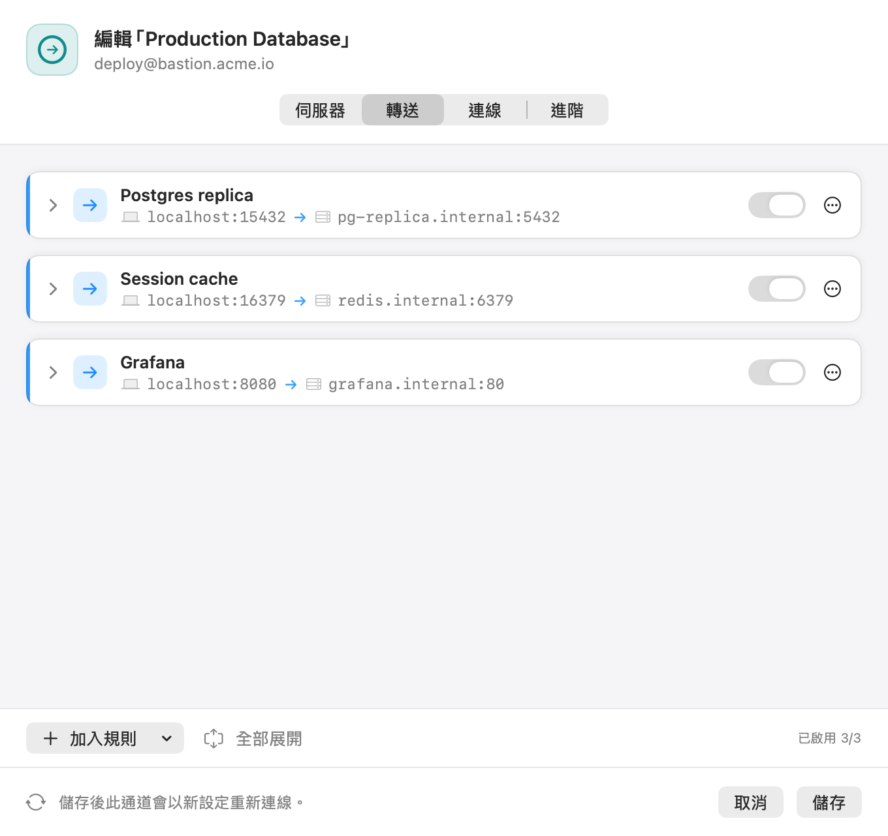
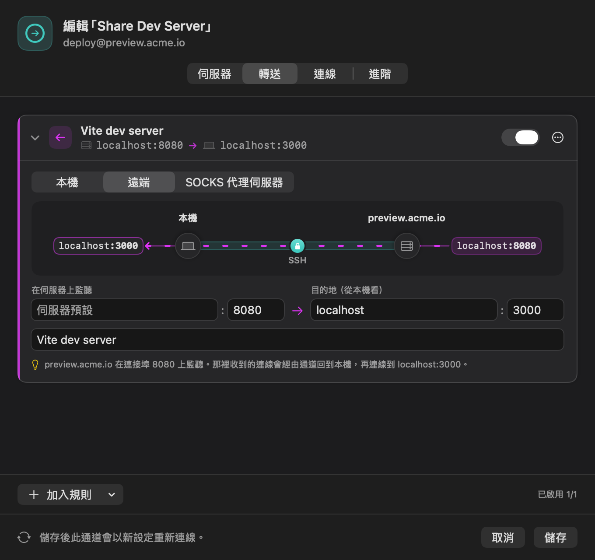
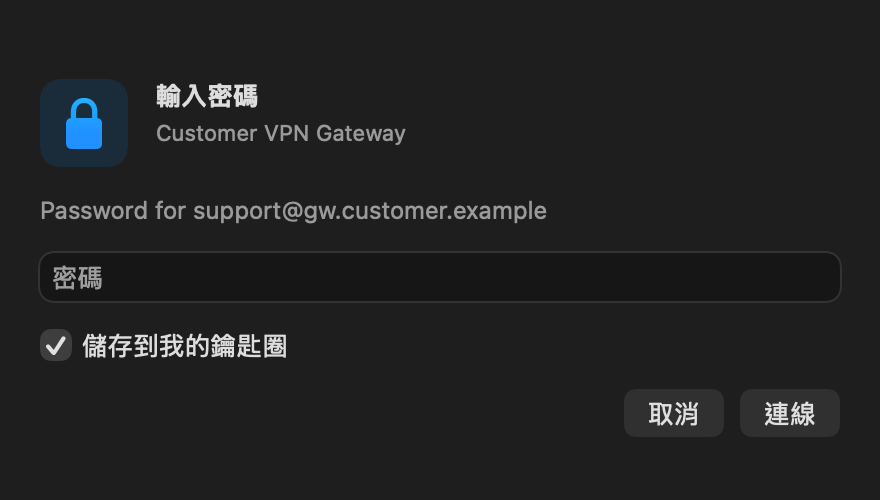
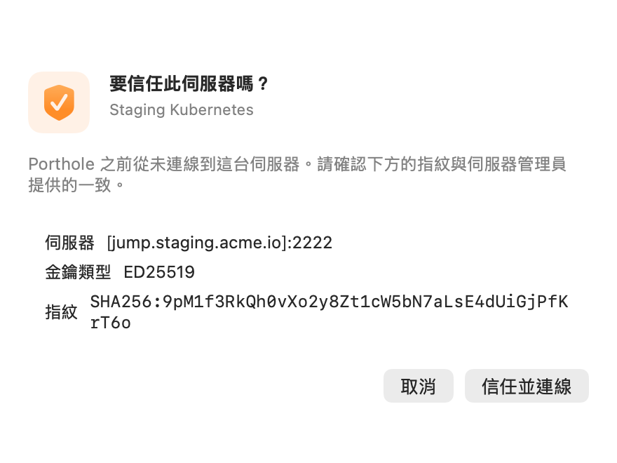
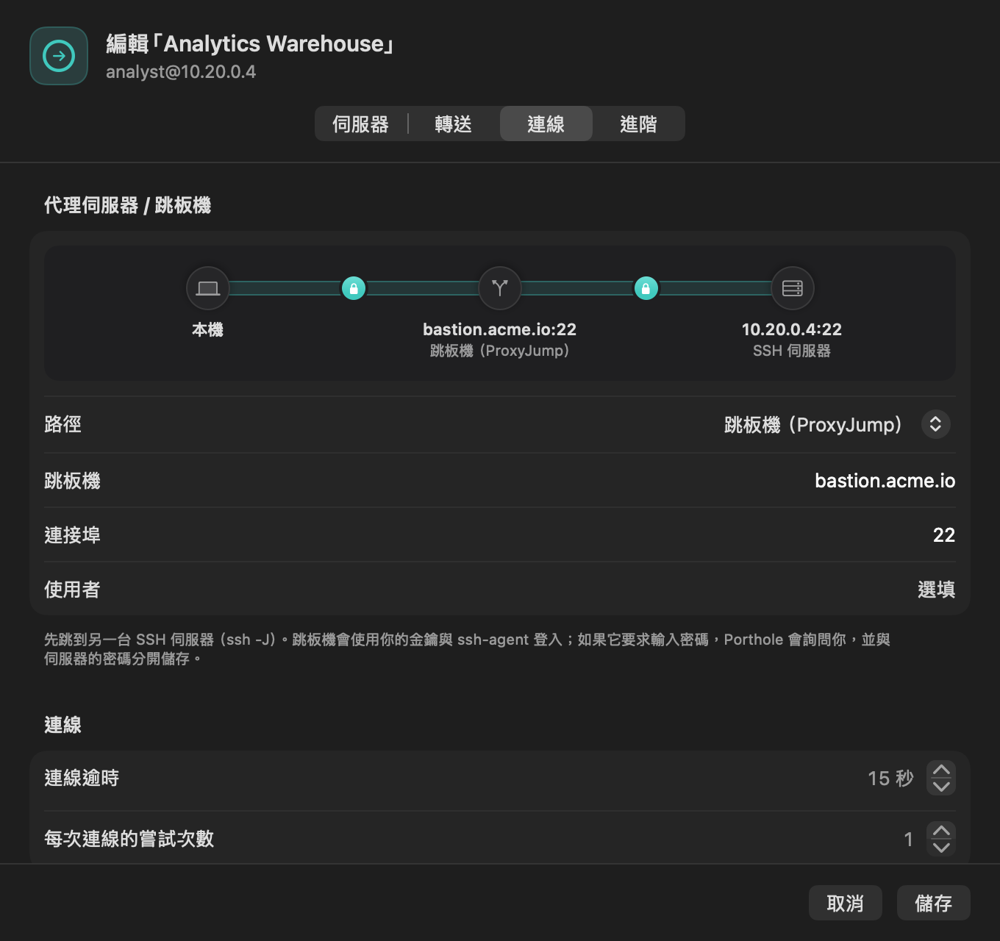
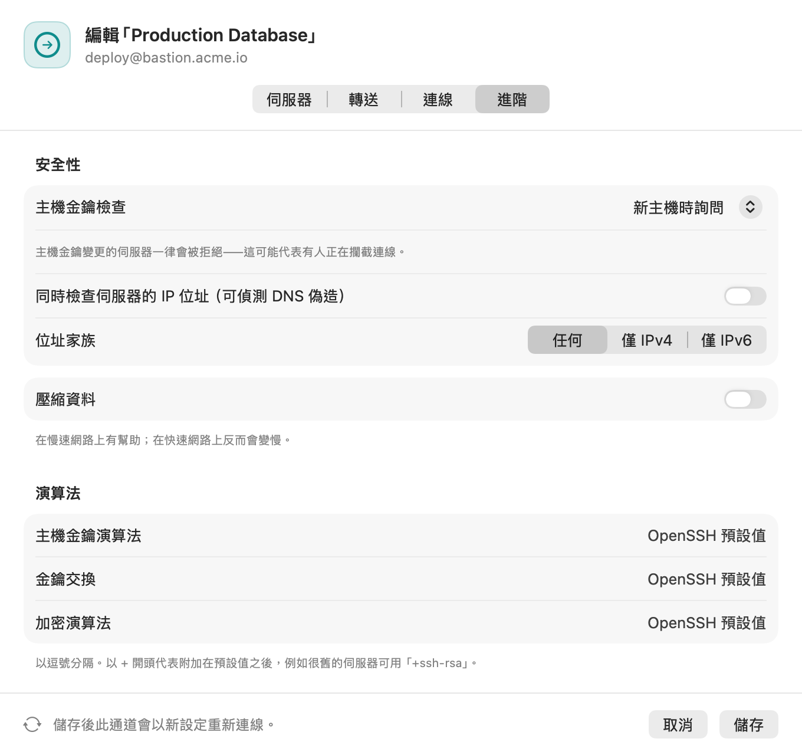
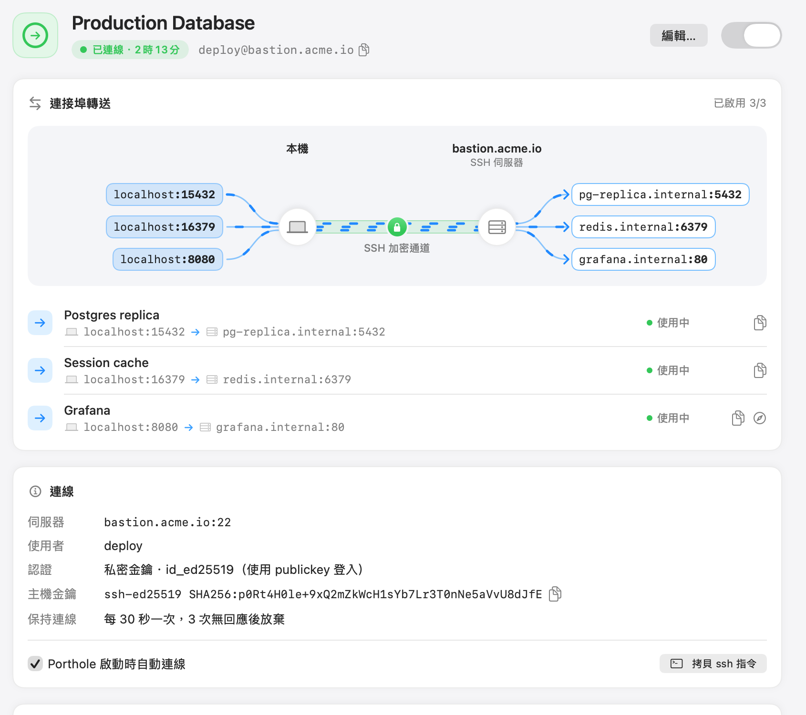
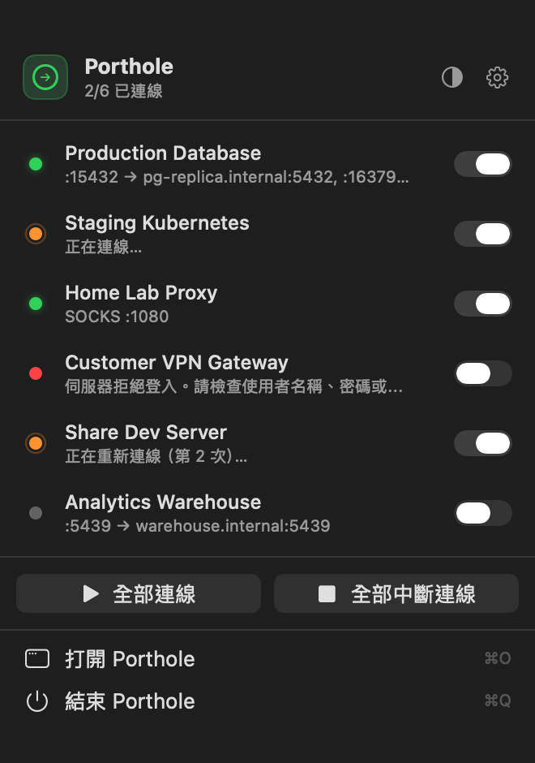
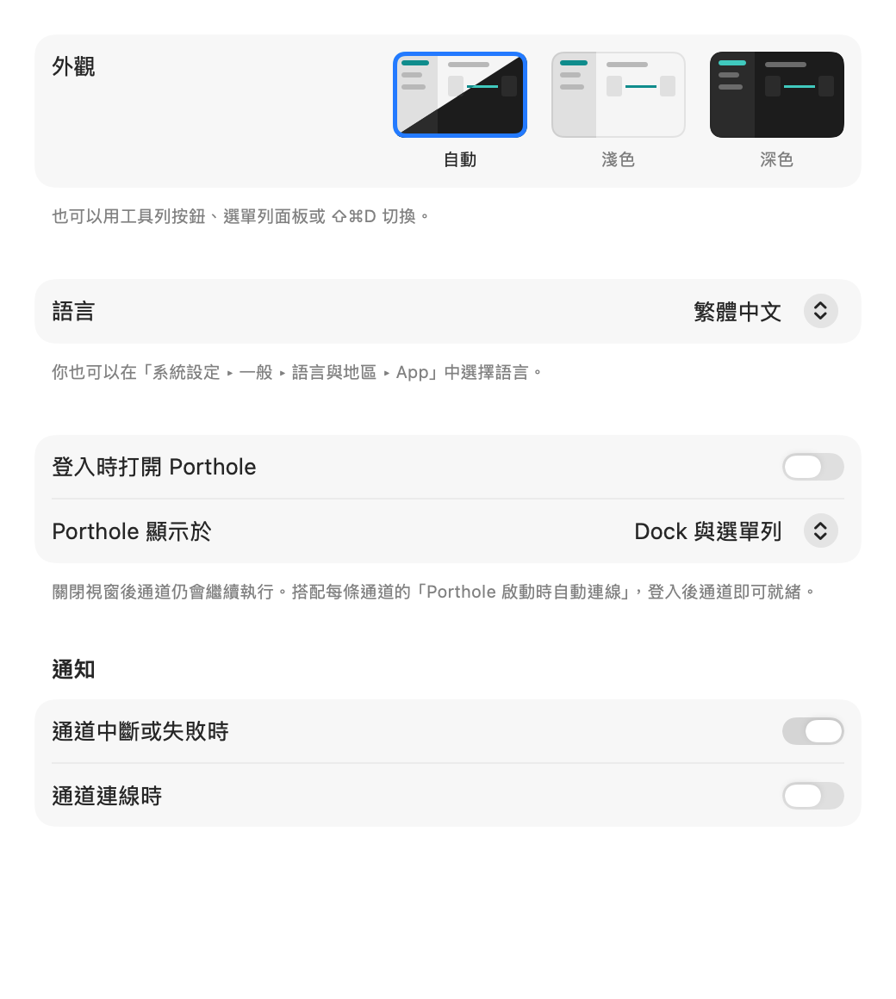

安裝
系統需求
- macOS 14 Sonoma 或更新版本。
- 搭載 Apple 晶片的 Mac（M1 及之後的機型）。Porthole 是原生 arm64 App，無法在 Intel Mac 上執行。
- 不需要另外安裝任何東西。Porthole 驅動的是 macOS 內建的 OpenSSH 用戶端
/usr/bin/ssh，它會隨系統更新。
下載與安裝
- 在下載區下載
Porthole-1.0.0.zip（1.3 MB）。 - 按兩下 zip 解壓縮，得到 Porthole.app。
- 把 Porthole.app 拖進「應用程式」檔案夾。
第一次打開
Porthole 目前使用臨時簽署，尚未經過 Apple 公證。第一次打開從網路下載的這類 App 時，macOS 會擋下它，並提示無法驗證開發者。依下面的步驟放行一次，之後就能正常打開：
- 按兩下 Porthole，看到提示後按一下「完成」關閉它。
- 打開 系統設定 ▸ 隱私權與安全性，捲動到頁面下方的「安全性」部分。
- 找到 Porthole 已被阻擋的提示，按一下旁邊的「強制打開」。在隨後的對話框中再按一次「強制打開」，並輸入登入密碼確認。
熟悉終端機的話，也可以直接移除下載時附加的隔離標記，效果相同：
xattr -dr com.apple.quarantine /Applications/Porthole.app在 macOS 14 上，也可以按住 Control 鍵並按一下 Porthole，在選單中選擇「打開」。從 macOS 15 起這個方法不再有效，請改用上面的步驟。
校驗下載檔案
在終端機裡計算 zip 的 SHA-256，結果應該與下面這串一致：
shasum -a 256 ~/Downloads/Porthole-1.0.0.zip697bc77d141e89e911210e3e66555268139e87e73b49bc40207f2b5a9a1430f6
建立第一條通道
假設資料庫 db.internal:5432 只能從跳板伺服器 bastion.acme.io 存取。下面把它接到你 Mac 的 localhost:15432 上。
-
按 ⌘N，或按一下工具列上的 +。第一次打開時，也可以按一下歡迎畫面上的「建立通道」。
-
在「伺服器」頁填寫名稱（隨你，例如「正式環境資料庫」）、主機
bastion.acme.io、連接埠22和使用者deploy。登入方式先保持「自動（代理程式與金鑰）」：它會用上 ssh-agent、~/.ssh裡的金鑰和~/.ssh/config。
-
切到「轉送」頁，按一下「加入規則」。類型選「本機」，在本機監聽
localhost:15432，目的地（從伺服器看）填db.internal:5432。上方的小圖會即時顯示這條規則的走向，下面還有一句白話說明。
-
按一下「建立並連線」。第一次連線到這台伺服器時，Porthole 會顯示它的指紋，核對無誤後按一下「信任並連線」（見伺服器指紋）。
-
連上之後，在資料庫用戶端裡連線到
localhost:15432就可以了。
想讓通道開機就緒：在「伺服器」頁勾選「Porthole 啟動時自動連線」，再到 設定 ▸ 一般 打開「登入時打開 Porthole」。關閉主視窗後，通道仍會繼續執行。
轉送規則
一條通道可以放任意多條規則，它們共用同一個 SSH 連線。每張規則卡片右上角都有開關，可以個別停用；停用的規則在圖示中會變淡。規則的類型隨時可以切換。
本機轉送 ssh -L
在本機連接埠存取遠端服務。本機 App 連線到「在本機監聽」的連接埠，流量經 SSH 伺服器轉送，再由伺服器連到目的地。
- 在本機監聽
- 位址和連接埠，例如
localhost:15432。 - 目的地（從伺服器看）
- 伺服器能存取到的主機和連接埠，例如
db.internal:5432。這裡寫localhost，指的是伺服器自己。
ssh -N -L 15432:db.internal:5432 deploy@bastion.acme.io遠端轉送 ssh -R
將本機服務分享給伺服器。伺服器在指定的連接埠上監聽，那裡收到的連線會經通道回到你的 Mac，再連到目的地。常用來把開發中的網頁給同事看，或接收 webhook 回呼。
- 在伺服器上監聽
- 位址留空表示使用伺服器預設，只在伺服器自己的 localhost 上監聽；連接埠例如
8080。 - 目的地（從本機看）
- 你 Mac 上的服務，例如
localhost:3000。
ssh -N -R 8080:localhost:3000 deploy@preview.acme.io
- 想讓其他機器也能存取伺服器上的這個連接埠，需要伺服器的 sshd 設定
GatewayPorts clientspecified，並在「在伺服器上監聽」裡填0.0.0.0或*。 - 只有以 root 登入時，才能開啟 1024 以下的遠端連接埠。
- 遠端連接埠在伺服器上已被占用時，伺服器會拒絕，Porthole 會提示「伺服器拒絕開啟遠端連接埠」。
SOCKS 代理 ssh -D
透過伺服器上網。本機在指定的連接埠上執行一個 SOCKS4/5 代理伺服器。把瀏覽器或 App 指向它，所有連線都會從 SSH 伺服器出去，適合存取只對伺服器開放的網站和內部位址。
- 在本機監聽
- 例如
localhost:1080。
設定好之後，在 App 裡把代理伺服器設為 SOCKS5、localhost:1080。例如在終端機裡：
curl --socks5-hostname localhost:1080 https://intranet.acme.io讓網域名稱也在伺服器那邊解析（curl 的 --socks5-hostname，或瀏覽器裡的「透過 SOCKS 代理 DNS 查詢」），才能存取只存在於內部 DNS 的位址。
預設集
「加入規則」旁邊的選單裡有常用的預設集，選一個再填目的地主機即可：
| 預設集 | 類型 | 連接埠 |
|---|---|---|
| PostgreSQL | 本機 | 5432 → 5432 |
| MySQL / MariaDB | 本機 | 3306 → 3306 |
| Redis | 本機 | 6379 → 6379 |
| MongoDB | 本機 | 27017 → 27017 |
| Web App | 本機 | 8080 → 80 |
| 遠端桌面 | 本機 | 3389 → 3389 |
| VNC / 螢幕共享 | 本機 | 5901 → 5900 |
| 分享本機開發伺服器 | 遠端 | 伺服器 8080 → 本機 3000 |
監聽位址
localhost（預設）：只有這台 Mac 上的程式能連線。0.0.0.0或*：區域網路裡的其他裝置也能連到你 Mac 的這個連接埠。請只在確實需要時使用。- 也可以填這台 Mac 某個網路介面的 IP 位址。
連線之前，Porthole 會檢查本機連接埠是否已被占用，被占用時會指出是哪個程序和它的 PID。同一條通道裡兩條規則用了同一個連接埠，也會直接提示。
登入方式
在「伺服器」頁的 登入 ▸ 方式 裡選擇：
- 自動（代理程式與金鑰）
- 預設方式。使用 ssh-agent、
~/.ssh裡的金鑰和~/.ssh/config。如果伺服器仍要求密碼，Porthole 會詢問你。 - 密碼
- 可以直接填在這裡，也可以留空，每次連線時再詢問。
- 私密金鑰
- 選擇私密金鑰檔案，例如
~/.ssh/id_ed25519。私密金鑰設有密語時，Porthole 只問一次，並可儲存在鑰匙圈裡。如果伺服器在金鑰之後還要驗證碼，Porthole 會再詢問。 - 鍵盤互動 / 雙重認證
- 適用於需要一次性驗證碼或其他提示的伺服器。Porthole 會把伺服器的每個問題逐一顯示給你。

在詢問密碼的對話框裡勾選「儲存到我的鑰匙圈」，下次就不用再輸入。所有密碼和密語都只保存在 macOS 鑰匙圈裡，不會寫進 Porthole 的設定檔，也不會出現在匯出檔案中。
伺服器指紋
第一次連線到一台伺服器時，Porthole 會跳出「要信任此伺服器嗎？」，顯示伺服器位址、金鑰類型和 SHA256 指紋。請和伺服器管理員提供的指紋核對，一致再按一下「信任並連線」。

在 進階 ▸ 安全性 ▸ 主機金鑰檢查 裡可以換一種策略：
- 新主機時詢問
- 預設。如上所述，每台新伺服器都先讓你確認。
- 自動信任新主機
- 第一次連線時直接記住伺服器的金鑰，相當於 OpenSSH 的
accept-new。 - 僅限已知主機
- 只連線到
~/.ssh/known_hosts裡已有的伺服器。
無論選哪一種，主機金鑰變更的伺服器一律拒絕，因為這可能代表有人正在攔截連線。如果你確認伺服器只是重新安裝了系統，先刪除舊記錄再連線：
ssh-keygen -R bastion.acme.io伺服器不在 22 連接埠時，寫成 ssh-keygen -R "[bastion.acme.io]:2222"。
勾選「同時檢查伺服器的 IP 位址」後，OpenSSH 還會核對 IP 位址，可以偵測 DNS 偽造。
代理伺服器與跳板機
在「連線」頁的 代理伺服器 / 跳板機 ▸ 路徑 裡選擇怎麼抵達 SSH 伺服器。頁面頂端的路線圖會顯示 本機 → 代理伺服器或跳板機 → 伺服器。

- 直接連線
- 直接連到 SSH 伺服器。
- 跳板機（ProxyJump）
- 先連到另一台 SSH 伺服器，再從那裡連到目標伺服器，相當於
ssh -J。跳板機用你的金鑰和 ssh-agent 登入；如果它要求密碼，Porthole 會詢問，並與目標伺服器的密碼分開儲存。 - SOCKS5 / SOCKS4 代理伺服器
- 經由 SOCKS 代理伺服器連線，預設連接埠 1080。在嚴格的防火牆後面很有用，甚至可以經由另一條 Porthole SOCKS 通道，例如
localhost:1080。 - HTTP 代理伺服器（CONNECT）
- 經由支援 CONNECT 的 HTTP 代理伺服器連線，預設連接埠 8080。
代理伺服器需要使用者名稱和密碼時，填好使用者並勾選「代理伺服器需要密碼」，密碼同樣儲存在鑰匙圈裡。
連線與保持連線
「連線」頁：
- 連線逾時
- 預設 15 秒，可設 3 到 120 秒。
- 每次連線的嘗試次數
- 預設 1 次。只在伺服器當機或無法存取時生效，伺服器主動拒絕連線時不會重試。
- 保持連線
- 預設每 30 秒一次，3 次沒有回應就判定斷線，也就是大約 90 秒內能發現失效的連線，接著 Porthole 會自動重新連線。設為「關閉」時，失效的連線可能很久都不會被發現。
- 網路介面
- 只有這台 Mac 同時連著多個網路（例如 Wi-Fi 和 VPN）時才需要指定。
「伺服器」頁的 行為：
- Porthole 啟動時自動連線
- 打開 Porthole 時自動連線這條通道。
- 連線中斷時自動重新連線
- 預設開啟。重試間隔依序為 2、4、8、16、30 秒，之後每 30 秒一次；連線穩定一段時間後重新計數。Mac 從睡眠中喚醒、網路恢復後，Porthole 也會主動重新整理通道。
修改正在執行的通道並儲存後，它會用新設定重新連線。
進階選項

- 位址家族
- 任意、僅 IPv4 或僅 IPv6。
- 壓縮資料
- 在慢速網路上有幫助，在快速網路上反而會變慢。
- 演算法
- 主機金鑰演算法、金鑰交換和加密演算法。留空則使用 OpenSSH 預設值。以逗號分隔；以
+開頭表示附加在預設值之後，例如很舊的伺服器可在「主機金鑰演算法」裡填+ssh-rsa。 - 使用 ~/.ssh/config 中的設定
- 預設開啟。這台主機在
~/.ssh/config裡的設定（例如 IdentityFile、ProxyJump）會一起生效。 - 額外的 ssh 選項
- 每行一個，例如
IPQoS throughput。會以-o選項傳給 ssh，並優先於上面的設定。 - 指令預覽
- 顯示 Porthole 實際執行的完整 ssh 指令。排查問題時可以拷貝到終端機裡，加上
-v執行。
日常使用
主視窗與路線圖示
左邊是通道列表，上方是搜尋欄和篩選標籤（全部、使用中、自動啟動和你的智慧型群組）。每條通道右側的開關就是連線和中斷連線。右邊顯示所選通道的狀態、連接埠轉送圖示和每條規則的即時狀態；規則右側可以拷貝位址，網頁類的規則還能直接在瀏覽器中打開。

每條通道畫成一個「領結」：
- 左邊是本機這一側的位址，右邊是伺服器那一側，所有規則匯入中間同一條 SSH 加密通道。
- 實心標籤是接收連線的監聽連接埠，空心標籤是最終抵達的位址。箭頭和流動的光點表示資料方向，遠端轉送是從伺服器流回本機。
- 顏色代表狀態：轉送生效時依類型著色（本機藍、遠端紫、SOCKS 青），啟動中為橙色，未連線為灰色虛線，停用的規則變淡。
- 通道中間的鎖在連上時變綠，失敗時變成紅色的 ✕。經由代理伺服器或跳板機時，通道下方會標出「經由 …」。
選單列
選單列裡的小舷窗顯示整體狀態：內圈空心表示全部未連線，半滿表示正在連線，填滿表示有通道已連線，帶斜線表示有通道連線失敗。
打開面板，可以個別開關每條通道，或者全部連線、全部中斷連線；右上角可以切換淺色和深色，也能打開設定。
關閉主視窗後通道仍會繼續執行。在 設定 ▸ 一般 ▸ Porthole 顯示於 裡選「僅選單列」，Porthole 就不會出現在 Dock 中。

搜尋與智慧型群組
搜尋欄依名稱、主機和連接埠篩選。常用的篩選條件可以存成智慧型群組：按一下篩選標籤旁邊的 +，或選擇 檔案 ▸ 新增智慧型群組…（⌥⌘N），填寫名稱和關鍵字（以空格分隔）。名稱、附註、主機或連接埠中包含所有關鍵字的通道都會出現在這個群組裡。
記錄
選擇 通道 ▸ 顯示記錄（⌘L）查看這條通道的連線過程，可以拷貝或清除。OpenSSH 自己的原始輸出保持英文；常見的錯誤和斷線原因會翻譯成對應語言的提示。
快速鍵
| 新增通道 | ⌘N |
| 新增智慧型群組 | ⌥⌘N |
| 連線所選通道 | ⌘R |
| 中斷所選通道的連線 | ⌘. |
| 全部連線 | ⌥⌘R |
| 全部中斷連線 | ⌥⌘. |
| 編輯 | ⌘E |
| 複製通道 | ⌘D |
| 拷貝 SSH 指令 | ⇧⌘C |
| 顯示記錄 | ⌘L |
| 刪除 | ⌘⌫ |
| 匯入通道 | ⇧⌘I |
| 匯出所選通道 | ⇧⌘E |
| 切換淺色/深色 | ⇧⌘D |
| 設定 | ⌘, |
匯入與匯出
從 SSH Tunnel 遷移
Codinn 的 SSH Tunnel 只有 Intel 版本，在未來的 macOS 上將無法執行。Porthole 能匯入它的匯出檔案：
- 在舊版 SSH Tunnel 裡全選通道，選擇 File ▸ Export Selected Tunnels… 匯出。
- 在 Porthole 裡選擇 檔案 ▸ 匯入通道…（⇧⌘I），選取剛才的檔案。
- 匯出檔案不含密碼。第一次連線時 Porthole 會詢問，勾選「儲存到我的鑰匙圈」即可。
原版匯出檔案的格式沒有公開文件，Porthole 依已知的欄位做了寬鬆解析。匯入後請逐條檢查一遍。
從 ~/.ssh/config 匯入
選擇 檔案 ▸ 從 ~/.ssh/config 匯入。只會匯入帶有 LocalForward、RemoteForward 或 DynamicForward 的 Host 項目，匯入的通道會繼續使用 ~/.ssh/config 中各主機的設定。例如：
Host db-tunnel
HostName bastion.acme.io
User deploy
LocalForward 15432 db.internal:5432匯出與備份
選擇 檔案 ▸ 匯出所選通道…（⇧⌘E）或 匯出所有通道…。在 設定 ▸ 資料 裡也可以匯出所有通道與智慧型群組。匯出檔案不包含密碼，密碼只保存在你的鑰匙圈中；在另一台 Mac 上匯入後，第一次連線時輸入即可。
設定
選擇 Porthole ▸ 設定…（⌘,）。
- 一般
- 外觀（自動、淺色、深色）；介面語言，修改後按一下「立即重新啟動」生效；登入時打開 Porthole；Porthole 顯示於 Dock 與選單列、僅 Dock 或僅選單列；通道中斷或失敗時、通道連線時是否通知。
- 進階
- Mac 從睡眠中喚醒後重新整理通道；ssh 執行檔，預設
/usr/bin/ssh，需要時可以換成 Homebrew 安裝的版本，例如/opt/homebrew/bin/ssh。 - 資料
- 從 SSH Tunnel 或
~/.ssh/config匯入，匯出所有通道與智慧型群組，以及設定檔的位置（可以在 Finder 中顯示）。

介面支援 10 種語言：English、简体中文、繁體中文、日本語、한국어、Deutsch、Français、Español、Português (Brasil)、Русский。預設跟隨系統，也可以在 系統設定 ▸ 一般 ▸ 語言與地區 ▸ App 裡為 Porthole 個別指定。
常見問題
提示「連接埠 15432 已被 … 使用」
另一個程式正在使用這個本機連接埠，常見的是另一條通道、本機執行的資料庫，或者在別處啟動的 ssh。提示裡會寫出程序名稱和 PID。結束那個程式，或者把規則的本機連接埠換一個（例如 15433）。也可以自己查看：
lsof -nP -iTCP:15432 -sTCP:LISTEN伺服器拒絕登入
檢查使用者名稱是否正確。用私密金鑰登入時，確認對應的公開金鑰已加入伺服器的 ~/.ssh/authorized_keys；用「自動」方式時，執行 ssh-add -l 看看 ssh-agent 裡有沒有金鑰。在 進階 ▸ 指令預覽 裡拷貝指令，加上 -v 在終端機裡執行，可以看到完整的登入過程。
提示「伺服器的主機金鑰已變更」
Porthole 不會連線到主機金鑰變更的伺服器。先向管理員確認伺服器是否重新安裝或更換過金鑰；確認無誤後，用 ssh-keygen -R 主機名稱 刪除舊記錄再連線（見伺服器指紋）。
提示「與伺服器沒有共同支援的演算法」
通常是很舊的伺服器。在 進階 ▸ 演算法 裡附加它支援的演算法，例如在「主機金鑰演算法」裡填 +ssh-rsa。能升級伺服器的話，升級更好。
提示「伺服器拒絕開啟遠端連接埠」
這個連接埠在伺服器上已被占用（可能是先前沒有斷乾淨的工作階段），或者連接埠號碼小於 1024 而你不是以 root 登入。在伺服器上用 ss -ltnp 查看是誰占用了連接埠，或者換一個連接埠。
闔上螢幕以後通道斷了
Mac 睡眠時網路會中斷。喚醒後 Porthole 會自動重新整理通道，開啟了「連線中斷時自動重新連線」的通道會自己連回來。
提示「ssh 不接受這些設定」
檢查 進階 ▸ 額外的 ssh 選項 裡有沒有拼錯的選項，以及 ~/.ssh/config 裡這台主機的設定。
打不開 Porthole，提示無法驗證開發者
請見第一次打開。
問題還是沒有解決
到 GitHub Issues 回報問題，附上 Porthole 和 macOS 的版本，以及記錄裡相關的幾行（送出前請刪掉伺服器位址等敏感資訊）。Porthole 是開放原始碼軟體，原始碼在 github.com/bryan31/porthole，也歡迎直接提交改進。
資料位置與解除安裝
- 通道設定
~/Library/Application Support/Porthole/tunnels.json- 密碼和密語
- macOS 鑰匙圈，名稱為 Porthole 的項目。可以在「鑰匙圈存取」裡搜尋 Porthole 找到。
- 伺服器指紋
- 和終端機裡的 ssh 共用
~/.ssh/known_hosts。
解除安裝 Porthole：
- 在 設定 ▸ 一般 裡關閉「登入時打開 Porthole」。
- 結束 Porthole，所有通道會隨之中斷。
- 把「應用程式」檔案夾裡的 Porthole.app 移到垃圾桶。
- 如果也想清除資料，刪除
~/Library/Application Support/Porthole檔案夾，並在「鑰匙圈存取」裡刪除名稱為 Porthole 的項目。